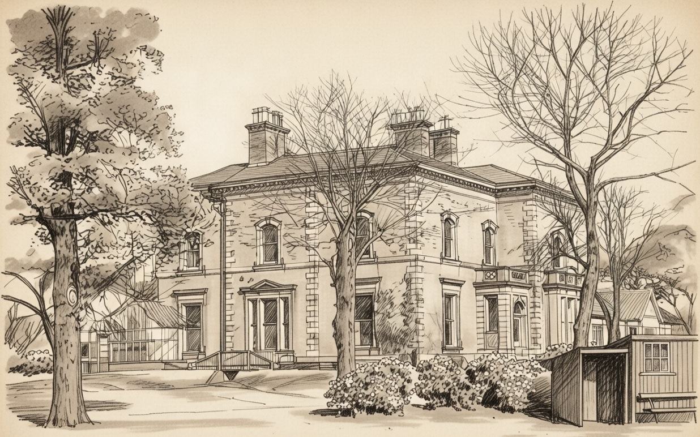
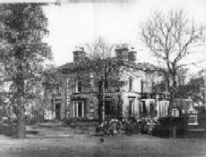

Balderstone Hall
Balderstone was part of the manor of Castleton. Eleanor, daughter of Henry de Balderstone, married James Holt in 1414 and conveyed land he formerly held to James when they established a house of some pretension in Balderstone. James Holt died without issue, resulting in the subdivision of the land. Henry Holt, likely a relative, lived in the hall but also died without issue in 1520. John Holt, who resided at Balderstone Hall, died there in 1607. The hall later passed to the Holts of Stubley. In 1626, a detailed survey of the Manor of Rochdale was undertaken as the King considered selling it. One of the nine freeholders in Castleton was Charles Holt of Balderstone Hall.
The Holts were farmer-weavers, and Charles Holt farmed 30 acres around the hall, including the kitchen meadow, crofts, rye fields, orchards, barns, and stables. Charles died in 1628, and his heir was his grandson John. John's son and heir was Richard Holt, a London merchant. The hall was let in 1688 to Jonathan Wolfenden. The Holt estates were sold to Timothy Whitehead in 1713.
The hall was demolished in 1967. To read more about Balderstone Hall, click here.


Map of Rochdale (South), 1908
Modern Location - Balderstone Hall (Site)
Balderstone Hall Lane, Balderstone, near Blackburn, Lancashire BB2 7LA
Interactive map showing the modern location of the historic Holt property. Zoom and drag to explore.